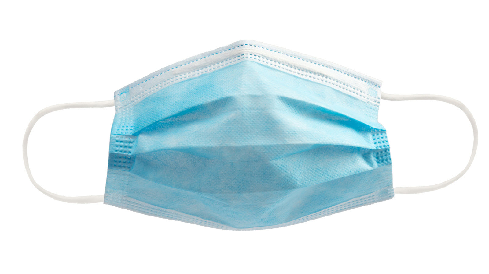
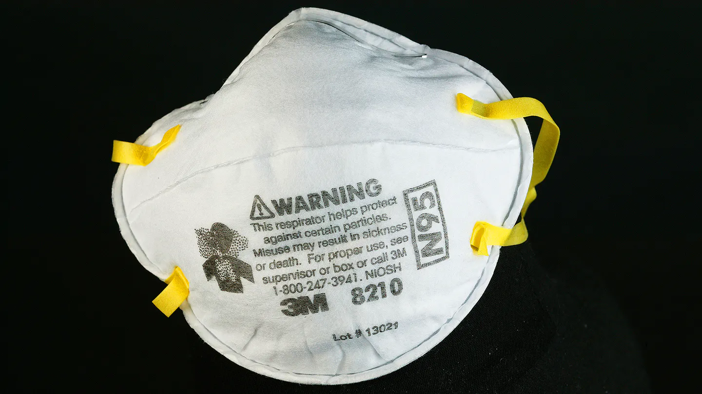

Learn more about the virus and how to prevent its spread
COVID-19 is caused by a novel coronavirus called SARS-CoV-2. Symptoms may show up 2-14 days after exposure to the virus in the form of a fever, coughing, and shortness of breath (not limited to this). The virus is highly contagious and is mainly spread from person to person through close contact with other people and through respiratory droplets (coughing, sneezing, talking). However, the virus may also spread even if people are not showing symptoms (asymptomatic) and by touching objects or surfaces that have the virus on them. It has also been recently reported that the coronavirus is starting to make its way into younger populations.
Given that the virus is primarily spread through respiratory droplets, it is vitally important to wear masks and other forms of personal protective equipment (gloves). Masks provide a barrier to the release of your own respiratory droplets that could otherwise end up in the air and onto other people.
How masks reduce the risks of COVID-19 spread even if someone is infected.


With the surge of new coronavirus cases across the United States, the supply of masks has struggled to keep up with the high demand for them, especially with regards to N95 masks being provided to front-line workers. However, what is more concerning is the uneven distribution of masks to hospitals and other facilities. Better-resourced hospitals are currently receiving sufficient supplies, while poorer-resourced facilities are struggling to receive shipments of personal protective equipment. Not only is there a shortage of resources, but what heightens the stakes is that facilities now have to resort to reusing personal protective equipment, which is meant to be disposable. Reusing disposable masks not only is not recommended, but can also endanger those around you if it carries the virus. “The Federal Centers for Medicare and Medicaid reported that one in five Florida nursing homes do not have a one-week supply of gowns or N95 masks to care for COVID-19 patients.” This is merely one example of the uneven distribution of personal protective equipment throughout the United States. Furthermore, America’s secretive stash of emergency supplies, the Strategic National Stockpile, which was supposed to be stocked, was almost empty as of April 1st. The stockpile was never replenished after the 2009 swine flu pandemic and frankly, officials were more concerned about a biological terrorist attack than another pandemic. This leaves our national stockpile several million short of what federal officials expect will be necessary through the pandemic.
Currently, two types of tests are available to determine if someone has or has had the coronavirus: the viral and antibody test. The viral test checks your body for the virus, and identifies if you currently have COVID-19. The antibody test identifies if you formerly had the virus by checking the antibodies in your system. Testing guidelines are set by state and local health departments as well as healthcare providers, so if you feel any symptoms, please check the appropriate websites. The CDC link below is a gateway to resources, and we strongly urge you to check it out.
Visit these sites for additional reliable information
Cedars Sinai Reliable Sources, Pratt Library Reliable Sources, CDC Reliable Sources
CDC How COVID Spreads, CDC COVID Symptoms, CDC Testing, CNN, GVWire, Vox, The Atlantic, FDA Masks